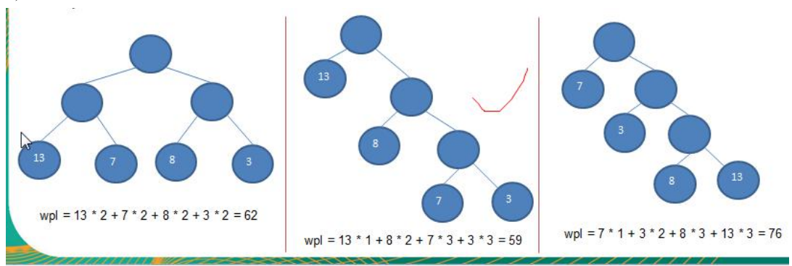
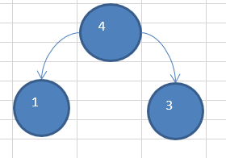
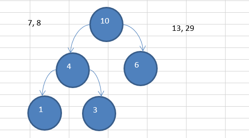
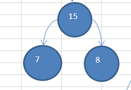
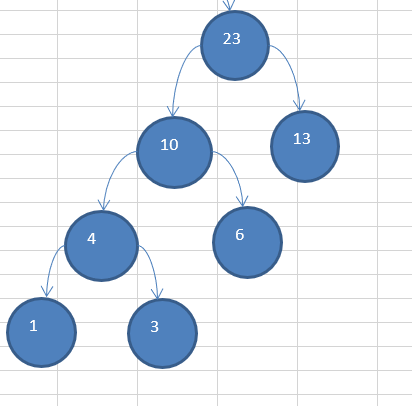
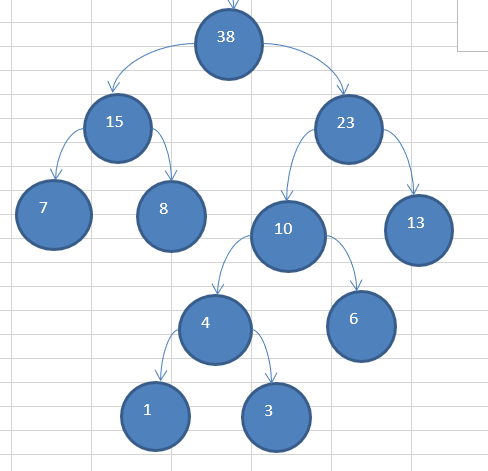
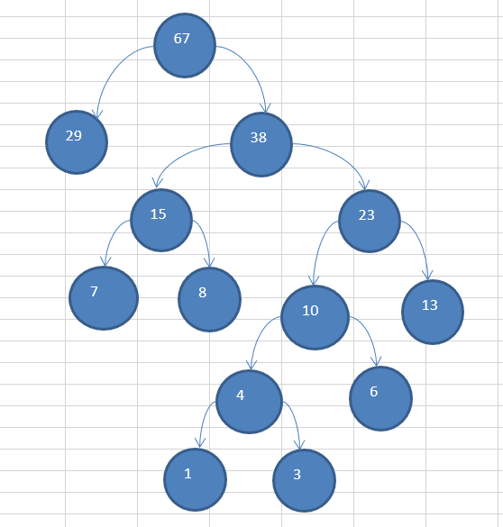

基本介绍
- 给定 n 个权值作为 n 个叶子结点，构造一棵二叉树，若该树的带权路径长度(wpl) 达到最小，称这样的二叉树为最优二叉树，也称为哈夫曼树(Huffman Tree), 还有的书翻译为霍夫曼树。
- 赫夫曼树是带权路径长度最短的树，权值较大的结点离根较近
赫夫曼树几个重要概念和举例说明
- 路径和路径长度：在一棵树中，从一个结点往下可以达到的孩子或孙子结点之间的通路，称为路径。通路中分支的数目称为路径长度。若规定根结点的层数为 1，则从根结点到第 L 层结点的路径长度为 L-1
- 结点的权及带权路径长度：若将树中结点赋给一个有着某种含义的数值，则这个数值称为该结点的权。 结
点的带权路径长度为：从根结点到该结点之间的路径长度与该结点的权的乘积
- 树的带权路径长度：树的带权路径长度规定为 所有叶子结点的带权路径长度之和，记为 WPL(weighted path
length) ,权值越大的结点离根结点越近的二叉树才是最优二叉树。
- WPL 最小的就是赫夫曼树

赫夫曼树创建思路图解
给你一个数列 {13, 7, 8, 3, 29, 6, 1}，要求转成一颗赫夫曼树.
构成赫夫曼树的步骤：
- 从小到大进行排序, 将每一个数据，每个数据都是一个节点 ， 每个节点可以看成是一颗最简单的二叉树
- 取出根节点权值最小的两颗二叉树
- 组成一颗新的二叉树, 该新的二叉树的根节点的权值是前面两颗二叉树根节点权值的和
- 再将这颗新的二叉树，以根节点的权值大小 再次排序， 不断重复 1-2-3-4 的步骤，直到数列中，所有的数
据都被处理，就得到一颗赫夫曼树
- 图解:
如何构建一颗 赫夫曼树的步骤
数组： 13, 7, 8, 3, 29, 6, 1
排序后：1,3, 6, 7, 8, 13, 29
1.挑出 1 和 3 组成新的二叉树

数组还剩 4,6,7,8,13,29
2.挑出 4 和 6 组成新的二叉树

数组还剩 7,8,10,13,29
3.挑出 7 和 8 组成新的二叉树

数组还剩 10,13,15,29
4.挑出 10 和 13 组成新的二叉树

数组还剩 15,23,29
5.挑出 15 和 23 组成新的二叉树

数组还剩 29,38
6.挑出 29 和 38 组成新的二叉树

代码实现
1
2
3
4
5
6
7
8
9
10
11
12
13
14
15
16
17
18
19
20
21
22
23
24
25
26
27
28
29
30
31
32
33
34
35
36
37
38
39
40
41
42
43
44
45
46
47
48
49
50
51
52
53
54
55
56
57
58
59
60
61
62
63
64
65
66
67
68
69
70
71
72
73
74
75
76
77
78
79
80
81
82
83
84
85
86
87
88
89
90
91
92
93
94
95
| public class HuffmanTree {
public static void main(String[] args) {
int arr[] = { 13, 7, 8, 3, 29, 6, 1 };
Node root = createHuffmanTree(arr);
preOrder(root);
}
public static void preOrder(Node root) {
if (root != null) {
root.preOrder();
} else {
System.out.println("是空树，不能遍历~~");
}
}
public static Node createHuffmanTree(int[] arr) {
List<Node> nodes = new ArrayList<Node>();
for(int value : arr){
nodes.add(new Node(value));
}
while (nodes.size() > 1) {
Collections.sort(nodes);
Node leftNode = nodes.get(0);
Node rightNode = nodes.get(1);
Node parent = new Node(leftNode.value + rightNode.value);
parent.left = leftNode;
parent.right = rightNode;
nodes.remove(leftNode);
nodes.remove(rightNode);
nodes.add(parent);
}
return nodes.get(0);
}
}
class Node implements Comparable<Node> {
int value;
char c;
Node left;
Node right;
public Node(int value) {
this.value = value;
}
public void preOrder() {
System.out.println(this);
if (this.left != null) {
this.left.preOrder();
}
if(this.right != null) {
this.right.preOrder();
}
}
@Override
public int compareTo(Node o) {
return this.value - o.value;
}
@Override
public String toString() {
return "Node [value=" + value + "]";
}
}
|